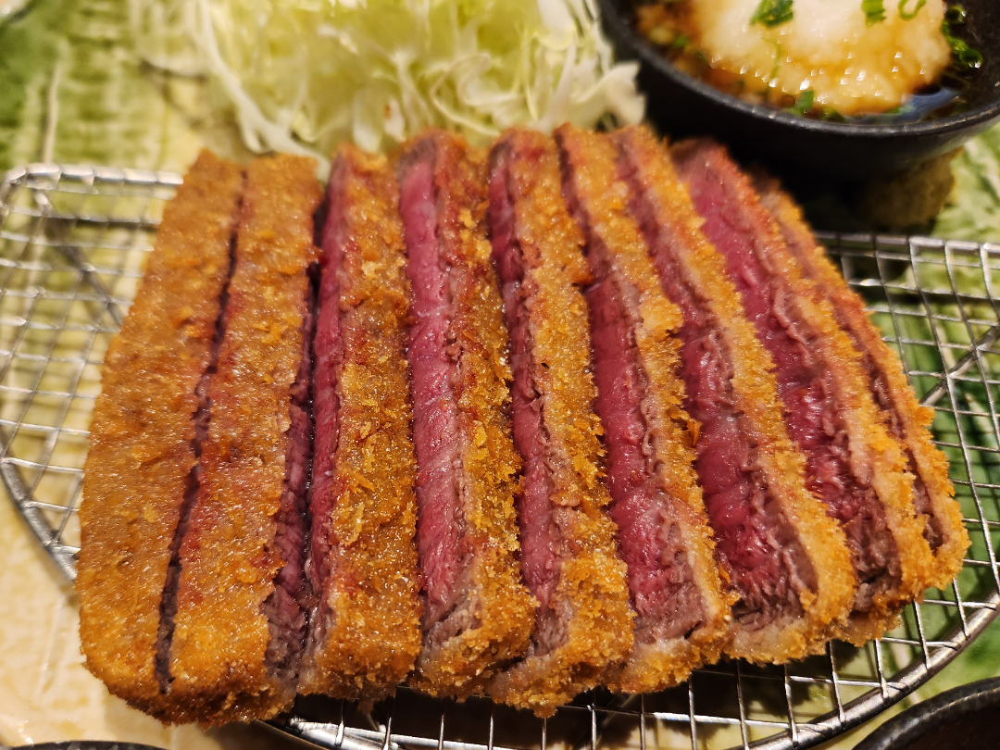

Home Page
Beef Katsu

Description
Beef katsu is a Japanese dish featuring a juicy beef cutlet coated in crispy panko breadcrumbs, fried to golden perfection. Served with a tangy tonkatsu sauce and a side of shredded cabbage, it’s a satisfying meal that’s both crunchy and tender.
This recipe is a twist on the classic katsu, using beef instead of pork, offering a rich flavor that pairs beautifully with steamed rice or miso soup.
Ingredients
- 4 beef cutlets (4 oz each), pounded to ¼-inch thickness
- Salt and pepper to taste
- ½ cup all-purpose flour
- 2 large eggs, beaten
- 1 cup panko breadcrumbs
- Vegetable oil for frying
- ¼ cup tonkatsu sauce
- 2 cups shredded cabbage
- Lemon wedges for serving
Steps
- Season beef cutlets with salt and pepper on both sides.
- Set up three shallow dishes: one with flour, one with beaten eggs, and one with panko breadcrumbs.
- Dredge each cutlet in flour, dip in egg, then coat with panko, pressing gently to adhere.
- Heat ½ inch of vegetable oil in a skillet over medium heat until shimmering.
- Fry cutlets for 2-3 minutes per side until golden and cooked through. Drain on paper towels.
- Slice cutlets into strips and serve with tonkatsu sauce, shredded cabbage, and lemon wedges.